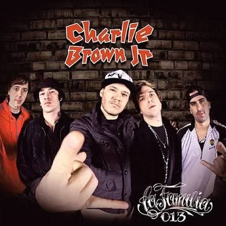

História da banda
Discografia

Charlie Brown Jr. foi uma das bandas mais marcantes da história do rock brasileiro. Formada em Santos, São Paulo, a banda conquistou milhares de fãs com uma mistura única de rock, rap, reggae, hardcore e elementos da cultura skate.
Liderada por Chorão, a banda ficou conhecida por suas letras sinceras, que falavam sobre a vida, amizade, amor, dificuldades, liberdade e a vontade de seguir os próprios sonhos. Suas músicas conseguiram representar os sentimentos e a realidade de muitos jovens brasileiros.
Ao longo da carreira, o grupo lançou diversos álbuns que marcaram gerações. Entre suas músicas mais conhecidas estão "Só os Loucos Sabem", "Dias de Luta, Dias de Glória", "Proibida Pra Mim" e "Zóio de Lula".
Além da música, Charlie Brown Jr. também se destacou por sua ligação com o skate e com a cultura urbana. Seu estilo autêntico ajudou a banda a construir uma identidade própria e a se tornar uma referência para jovens de diferentes épocas.
Mesmo após a morte de Chorão, em 2013, e o fim das atividades da banda, seu legado continua vivo. Suas canções seguem sendo ouvidas por novos fãs e continuam transmitindo mensagens de superação, reflexão e liberdade.
Uma mistura de estilos musicais que marcou o rock brasileiro.
O skate e o estilo de rua fizeram parte da identidade da banda.
Suas letras continuam inspirando fãs de diferentes gerações.
Relembre os grandes sucessos do Charlie Brown Jr. e conheça os álbuns que marcaram gerações.
Conhecer os álbunsLitoral de São Paulo
O Charlie Brown Jr. surgiu em Santos, no litoral do estado de São Paulo, e se tornou uma das bandas mais conhecidas do rock nacional.
Cidade: Santos
Estado: São Paulo
País: Brasil
Ver localização no mapaConheça um pouco mais sobre o Charlie Brown Jr.
A banda surgiu em Santos, no litoral de São Paulo, em 1992, e se tornou um dos grandes nomes do rock brasileiro.
Chorão era o vocalista e um dos principais compositores da banda, conhecido por seu estilo e suas letras marcantes.
O Charlie Brown Jr. misturava principalmente rock, rap, reggae e influências da cultura skate.